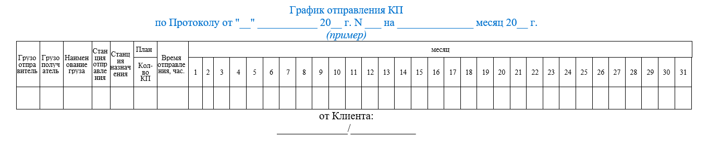

Обязанности сторон
- При оказании услуги ОАО «РЖД» обязуется:
- Обеспечивать перевозку КП по графику, по направлениям и длиной в соответствии с Протоколом и согласованным ОАО «РЖД» Графиком
- Каждые 5 (пять) дней (с 1 (первого) числа отчетного месяца) формировать и представлять Клиенту для подписания Отчет о размере платы за оказание Услуги перевозки КП по графику
- Клиент обязуется:
- Ежемесячно не позднее, чем за 10 дней до начала месяца, предшествующего планируемому, формировать в АС ЭТРАН месячный график (наряд-заказ) отправления контейнерных поездов в соответствии с Протоколом
- При отсутствии присоединения к Соглашению об оказании информационных услуг в сфере грузовых перевозок, утвержденному распоряжением ОАО «РЖД» от 18.12.2017 № 2633р, Клиент ежемесячно не позднее, чем за 10 дней до начала месяца, предшествующего планируемому, предоставляет в ЦФТО/ТЦФТО График отправления контейнерных поездов в соответствии с Протоколом
- Обеспечивать наличие на станции отправления документально оформленных и готовых к отправлению контейнеров в составе КП установленной длины не менее, чем за установленное договором время до момента отправления
- При обоснованном несогласии с данными Отчета в установленный срок. При подписании указанных документов с разногласиями, одновременно с их передачей ОАО «РЖД», передавать ОАО «РЖД» подтверждающие разногласия документы (перечни разногласий и иные первичные документы)
- Ежесуточно до 14 ч. 00 мин. предплановых суток формировать в АС ЭТРАН суточный клиентский план отправления КП по графику
